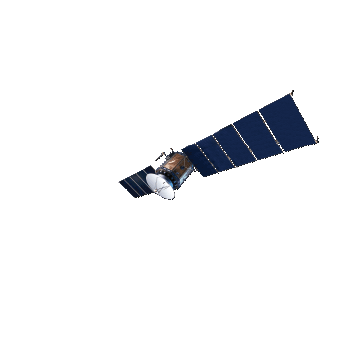

EXOSFERA
A exosfera é a camada mais externa da atmosfera da Terra, localizada acima da termosfera. É caracterizada pela presença de átomos leves e pela extrema rarefação. Nessa região, os átomos podem escapar para o espaço. A exosfera é uma fronteira entre a atmosfera terrestre e o espaço exterior, onde satélites orbitam e a atmosfera encontra o vácuo do espaço. nela a densidade dos gases atmosféricos diminui drasticamente e se dispersam em todo o espaço sideral, na medida que a temperatura cai até um valor próximo a –270°C.
